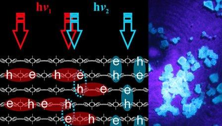

|
|
|
Автор сайта: Климов А.Г. Группа: 1ИВТпб-01-21оп |
Физики из России и зарубежных стран научились создавать особые световые квазичастицы и манипулировать их свойствами при комнатной температуре, что открывает дорогу для сверхбыстрых видов оптической памяти, говорится в статье, опубликованной в журнале Advanced Materials.

В последние годы ученые активно пытаются использовать квантовые свойства отдельных атомов и частиц для хранения и записи информации, в том числе и данных, которые используют квантовые компьютеры. На роль «носителей информации нового типа» претендуют с разной долей успешности спин электронов в полупроводниках, вкрапления атомов азота в алмазах, а также различные квазичастицы – объединения атомов или частиц, ведущих себя как единое целое.
Валентин Миличко из Университета ИТМО в Санкт-Петербурге и его коллеги приспособили для этих целей так называемый экситон – квазичастицу, представляющую собой объединение свободного электрона и «дырки» – положительно заряженного атома, вокруг которого он вращается.
Экситоны, как объясняют ученые, возникают тогда, когда с атомом сталкивается частица света, фотон, и возбуждает его, выбивая электрон на более высокую орбиту, где его стремление вернуться обратно уравновешивается отталкивающей силой остальных электронов. Эти частицы являются переходной формой между фотонами и электронами, поэтому ученые считают, что они помогут создавать компактные оптоэлектронные устройства для быстрой записи и обработки оптического сигнала.
Проблема заключается в том, что экситоны возникают и существуют внутри полупроводниковых кристаллов только при охлаждении жидким азотом, из-за чего экситоны невозможно использовать для практических целей. Миличко и его коллеги решили эту проблему, создав экситоны в необычной «слойке» из органических и металлических соединений.
Их разработка представляет собой так называемый «металл-органический каркас» — сложный полимерный материал, похожий по структуре на пчелиные соты и обладающий очень высокой пористостью и прочностью. Сегодня МОК используются для создания фильтров, способных улавливать углекислоту или водород и удерживать в себе огромные количества этих газов.
Как показали опыты Миличко и его коллег, внутри такого материала, состоящего из цинка и набора органических полимеров, будут образоваться структуры, в которых могут достаточно долгое время существовать экситоны при комнатных температурах.
Российские и европейские физики научились создавать два вида экситонов в таком кристалле, одни из которых находятся внутри «сот», а другие – в слоях между ними. Время жизни внутрислойных экситонов относительно мало, но их высокая плотность и подвижность позволяют использовать эти квазичастицы для генерации света, например, в светодиодах и лазерах.
Межслоевые экситоны более живучи, но малоподвижны, поэтому ученые предлагают применять их для записи информации на кристалле. Как показали первые опыты с подобными квазичастицами, информацию в них можно записывать почти мгновенно, а хранится в них она на протяжении нескольких дней. Этого достаточно для того, чтобы использовать их в качестве памяти.
Источник| © Климов А.Г. | Карта сайта |